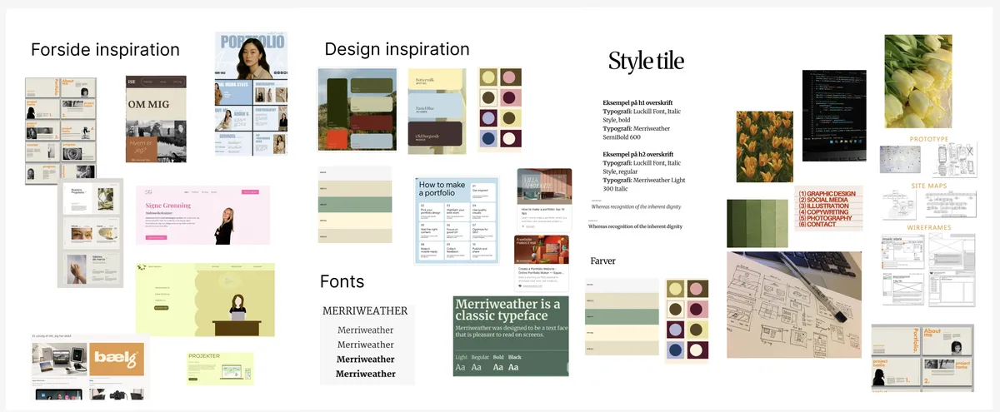
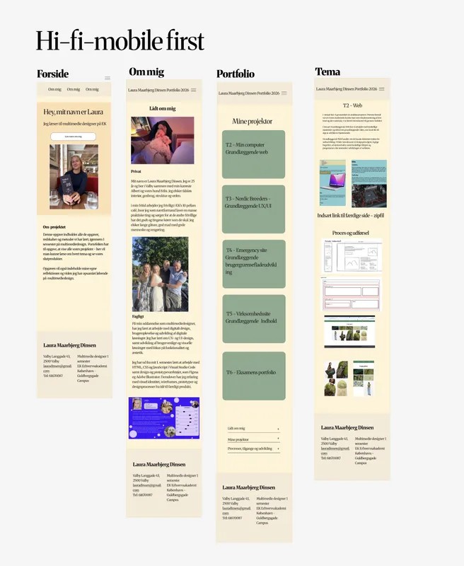

T6 Eksamens portfolio
I tema 6 arbejdede jeg med at udvikle mit eget portfolio-website, hvor jeg samlede og præsenterede de projekter og kompetencer, jeg har opnået gennem 1. semester. Fokus var både på design, struktur og brugeroplevelse samt på at skabe et responsivt website ved hjælp af HTML og CSS mm. Temaet gav mig mulighed for at vise min udvikling inden for webdesign, kodning og digitale designprincipper. Projektet viste sig at gå i mange retninger, hvilket også er noget jeg er blevet klogere og mere bevidst omkring.

Opgave, proces og udførsel
Ud fra tidligere temaer, har man fået en bred vifte af proces muligheder. Jeg startede med min recearch og ide-udvikling i figma.Herefter lod jeg mig inspirere af andre portfolier og fandt min stil. En stor del af processen gik på at videre udvikle mine ideer og lave dem til skiter, wireframes og teste løbende. Herefter begyndte kodningen, hvor det gik fra ide til produkt. Efter kodningen påbegyndte jeg min ydereligere test, for at forbedre og fin pudse.
